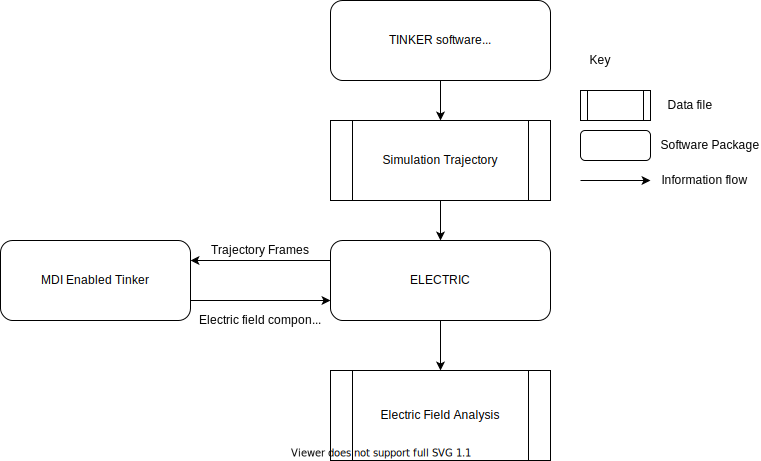

Usage¶
Information Flow¶
ELECTRIC is a post-processing tool for simulations running with the AMOEBA polarizable force field using the Tinker software package.
{kind=link}
Procedure¶
In general, running a calculation with the driver requires the following steps:
1. Run a dynamics simulation with Tinker.
This simulation should be run with periodic boundary conditions (if desired), and should print snapshots of its results to a single file (i.e., coordinates.arc).
If each snapshot was instead written to a different file (i.e., coordinates.001, coordinates.002, etc.) then you may concatenate them into a single file.
2. Create a new Tinker keyfile.
This keyfile should be identical to the one used in Step 1, except that it must not include periodic boundary conditions and must not use an Ewald summation. This means that in the .key file for running the driver, you should not have an a-axis keyword, or keywords related to Ewald.
3. Launch one (or more; see the `-nengines` option below) instance(s) of Tinker as an MDI engine, using the keyfile created in Step 2.
This is done in the same way you launch a normal Tinker simulation (by launching the dynamic.x executable) except that the -mdi command-line option is added. However, it is very important that the reference coordinates you use do not have periodic boundary information. So, if when you originally ran the simulation you started it with a snapshot from a previous simulation run, make sure to create a new snapshot to launch the simulation from which does not include box information on line 2.
The argument to the -mdi command-line option details how Tinker should connect to the driver; its possible arguments are described in the MDI documentation .
When in doubt, we recommend doing -mdi "-role ENGINE -name NO_EWALD -method TCP -port 8021 -hostname localhost"
When run as an engine, Tinker should be launched in the background; this is done by adding an ampersand (&) at the end of the launch line.
4. Launch the driver The driver accepts a variety of command-line options, which are described in detail below. One possible launch command would be:
`python ${DRIVER_LOC} -probes "1 2 10" -snap coordinates.arc -mdi "-role DRIVER -name driver -method TCP -port 8021" --byres ke15.pdb --equil 51 --nengines 15 &`
where DRIVER_LOC is the path to ELECTRIC.py which you set during the configuration step. See the section ELECTRIC Calculation Settings for a detailed explanation of command line arguments for ELECTRIC.
The output will be written to proj_totfield.csv.
It is useful to write a script that performs Steps 3 and 4, especially if the calculations are intended to be run on a shared cluster. Such a script might look like:
Example Script¶
1 2 3 4 5 6 7 8 9 10 11 12 13 14 15 16 17 18 19 20 | # location of required codes
DRIVER_LOC=$(cat ../locations/ELECTRIC)
TINKER_LOC=$(cat ../locations/Tinker_ELECTRIC)
# number of instances of Tinker to run as an engine
nengines=18
# set the number of threads used by each code
export OMP_NUM_THREADS=1
# launch Tinker as an engine
for i in $( eval echo {1..$nengines} )
do
${TINKER_LOC} coordinates.in -k no_ewald.key -mdi "-role ENGINE -name NO_EWALD -method TCP -port 8021 -hostname localhost" 10 1.0 1.0 2 300 > no_ewald${i}.log &
done
# launch the driver
python ${DRIVER_LOC} -probes "32 33 59 60" -snap coordinates.arc -mdi "-role DRIVER -name driver -method TCP -port 8021" --byres ke15.pdb --equil 51 --nengines ${nengines} &
wait
|
You can read more below, or you can try out the tutorial to run a calculation yourself.
ELECTRIC Calculation Settings¶
You can change the options for your electric calculation through command line arguments.
usage: python ELECTRIC.py [-h] [-mdi MDI] -snap SNAP -probes PROBES
[--nengines NENGINES] [--equil EQUIL]
[--stride STRIDE] [--byres BYRES] [--bymol]
Required Arguments¶
- -mdi
flags for mdi. When in doubt, -mdi “-role ENGINE -name NO_EWALD -method TCP -port 8021 -hostname localhost”, type=str, required=True is a good option.
- -snap
The file name of the trajectory to analyze.
- -probes
Atom indices which are probes for the electric field calculations. For example, if you would like to calculate the electric field along the bond between atoms 1 and 2, you would use -probes “1 2”.
Named Arguments¶
- --nengines
This option allows the driver to farm tasks out to multiple Tinker engines simultaneously, enabling parallelization of the electric field analysis computation. The argument to this option must be equal to the number of Tinker engines that are launched along with the driver.
Default: 1
- --equil
‘The number of frames to skip performing analysis on at the beginning of the trajectory file (given by the -snap argument) For example, using –equil 50 will result in analysis starting after frame 50 of the trajectory, (in other words, the first frame which will be analyzed is frame 50 + stride).
Default: 0
- --stride
The number of frames to skip between analysis calculations. For example, using –stride 2 would result in analysis of every other frame in the trajectory.
Default: 1
- --byres
Flag which indicates electric field at the probe atoms should be calculated with electric field contributions given per residue. If –byres is indicated, the argument should be followed by the filename for a pdb file which gives residues.
- --bymol
Flag which indicates electric field at the probe atoms should be calculated with electric field contributions given per molecule.
Default: False
Output¶
The driver will output a file called proj_totfield.csv. This is a CSV file which contains data on the projected electric field at the point between each probe atom due to each fragment , depending on input (–byres for by residue, –bymol for by molecule, or by atom if neither argument is given.). Each column will contain a header which indicates which probe atoms the measurement is between, followed by the frame number, while the rows will be the electric field at the mean location between the probe atoms due to a particular fragment
Consider the example (bench5), which was run with the following command:
python ${DRIVER_LOC} -probes "1 40" -snap bench5.arc -mdi "-role DRIVER -name driver -method TCP -port 8022" --bymol
Here, we have set the probe atoms to be atoms 1 and 40, and we have indicated we want the the electric field between the probe atoms based on contributions by molecule. Headers will be “i and j - frame n. Where i and j are the atom indices of the probes, and n is the frame number.
For the example, headers are:
"1 and 40 - frame 1"
"1 and 40 - frame 2"
"1 and 40 - frame 3"
"1 and 40 - frame 4"
"1 and 40 - frame 5"
Since this calculation was run using --bymol, there are 216 rows, one for each molecule in the system.
The first entry, column 1 and 40 - frame 1, header molecule 1, gives the projected total electric field at the midway point between atom 1 and atom 40 due to molecule 1. The electric field has been projected along the vector which points from atom 1 to atom 40. The projection will always be along the vector from atom 1 to atom 2. You can reverse the sign of the number if you would like the vector to point the opposite way.
Running ELECTRIC in Parallel¶
Note
You must have mpi4py installed to run ELECTRIC in parallel. You can install it from conda
conda install -c anaconda mpi4py
ELECTRIC is parallelized using MPI4Py. You can take advantage of this parallelization by making sure MPI4Py is installed and using more than one ELECTRIC engine using the -nengines command. Note that if you are using the -nengines argument with a number greater than one, you must launch the equivalent number of Tinker instances. In the Example Script, this is acheived by setting a variable nengines and using this number to launch Tinker instances in a loop (lines 12-15) and inputting the same variable into the ELECTRIC launch on line 18.
Warning
Launching an unmatching number of MDI-Tinker and ELECTRIC instances will result in your calculation hanging. Make sure that you launch an equivalent number of MDI-Tinker instances to your -nengines argument.